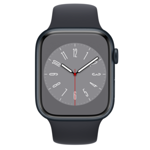

História da Apple
A logo da Apple é um dos símbolos mais icônicos da história da tecnologia, reconhecida em todo o mundo. A primeira versão da logo, criada em 1976, apresentava uma ilustração de Isaac Newton sentado sob uma macieira, sugerindo a ideia da descoberta do conhecimento. Em 1977, a empresa lançou sua atual logo, que apresenta uma maçã mordida, em cores vibrantes. A escolha da maçã como símbolo da empresa foi inspirada na história de Alan Turing, um matemático britânico que cometeu suicídio com uma maçã envenenada. A logo da Apple evoluiu ao longo dos anos, mas ainda mantém sua identidade icônica, representando a inovação, a simplicidade e a criatividade.

A primeira versão
A primeira versão da Apple foi o computador Apple I, criado em 1976 por Steve Wozniak e Steve Jobs. O Apple I foi o primeiro computador pessoal vendido em grande escala e foi construído em uma placa de circuito impresso, com capacidade de exibir texto em uma tela de televisão. Embora tenha sido um sucesso modesto, com apenas cerca de 200 unidades produzidas, o Apple I estabeleceu as bases para a futura linha de computadores pessoais da Apple, que se tornariam alguns dos mais populares e icônicos da história da tecnologia.
Como surgiu o Safari - Navegador da Apple
O Safari é um navegador web desenvolvido pela Apple e lançado em 2003. Ele foi criado para ser uma alternativa ao Internet Explorer da Microsoft, que era o navegador mais popular na época. O Safari foi originalmente projetado para o sistema operacional Mac OS X da Apple, mas mais tarde foi adaptado para funcionar em outros sistemas operacionais, incluindo o Windows.
O desenvolvimento do Safari foi impulsionado pelo desejo da Apple de oferecer uma experiência de navegação mais rápida, segura e intuitiva para seus usuários, bem como para integrar o navegador com outros produtos e serviços da Apple. O Safari se tornou um dos navegadores mais populares do mundo, especialmente em dispositivos móveis, graças ao seu desempenho rápido e eficiente, recursos de segurança avançados e suporte a tecnologias modernas da web.
Afinal, quem é Steve Jobs?
Steve Jobs foi o criador da Apple, que nasceu em São Francisco, Califórnia, em 1955. Desde jovem, Jobs era um entusiasta de tecnologia, tendo desenvolvido interesse em computadores na década de 1970. Em 1976, ele co-fundou a Apple com seu amigo e parceiro de negócios, Steve Wozniak, em sua garagem em Los Altos, Califórnia. Juntos, eles desenvolveram o Apple I, o primeiro computador pessoal vendido em grande escala.
Jobs rapidamente se tornou o rosto público da Apple e liderou a empresa em muitas de suas inovações mais icônicas, incluindo o Macintosh, iPod, iPhone e iPad. Ele também foi fundamental para a introdução da computação gráfica, revolucionando a indústria do entretenimento com a Pixar Animation Studios, que mais tarde foi vendida para a Disney. Jobs faleceu em 2011, mas seu legado na indústria de tecnologia continua a inspirar e influenciar muitas pessoas em todo o mundo.
Criação do Apple Watch
O Apple Watch surgiu de uma ideia que Steve Jobs tinha desde os anos 80 de criar um dispositivo que pudesse ser usado no pulso e que pudesse ser usado como um computador pessoal. No entanto, a tecnologia da época ainda não era avançada o suficiente para tornar essa ideia uma realidade. Em 2010, a Apple começou a trabalhar em um dispositivo vestível, que acabaria se tornando o Apple Watch.
O dispositivo foi lançado em abril de 2015 e oferece uma variedade de recursos, incluindo notificações de mensagens e chamadas, rastreamento de atividades físicas, monitoramento de saúde, pagamentos móveis e integração com outros dispositivos Apple. O Apple Watch é um dos wearables mais populares do mundo e continua a evoluir com o lançamento de novas versões e atualizações de software.
A última versão do iPhone - iPhone 14 PRO
Então é isso! Espero que você tenha gostado do nosso artigo com essa curiosidade sobre a Apple e sua icônica logo marca.